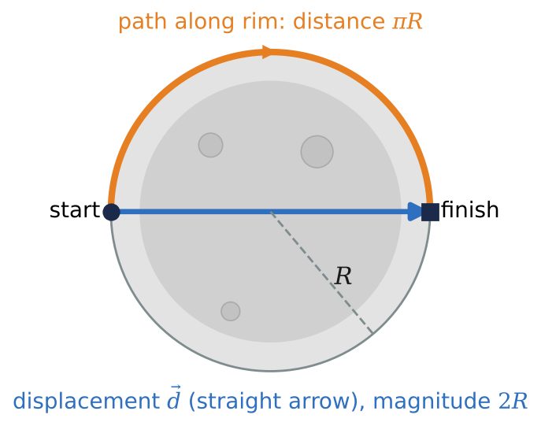
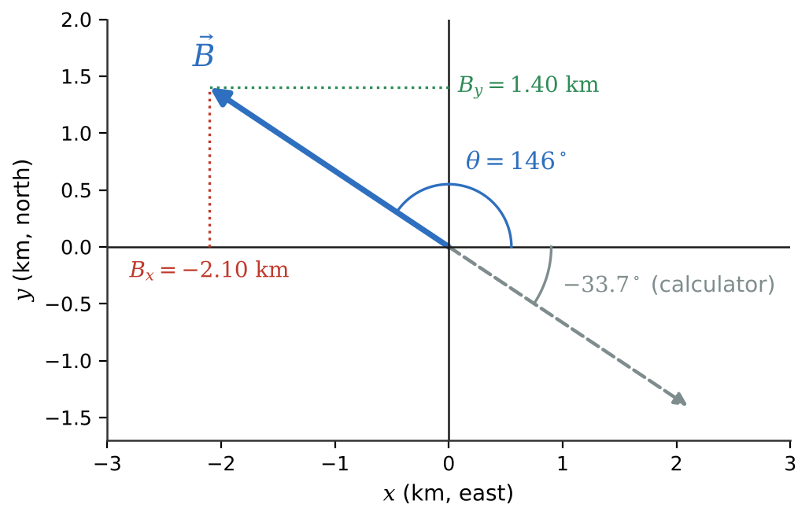
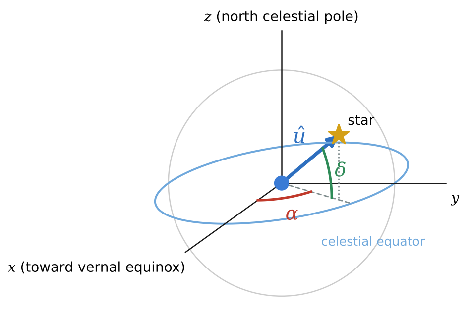

🧭What you will learn
By the end of this module, you can:
- Tell scalars from vectors and distinguish distance from displacement.
- Convert a vector between magnitude-and-direction form and component form, choosing the correct quadrant for the angle.
- Write vectors with unit vectors and find the unit vector pointing toward a star from its right ascension and declination.
- Add and subtract vectors by components and compute dot and cross products.
1.1Vectors and Scalars, Intuitively
A scalar is fully described by one number with a unit: the mass of Jupiter, the Sun's surface temperature, the length of a day. A vector has both a magnitude (how much) and a direction (which way): displacement, velocity, acceleration, force. When we say Earth orbits at 29.8 km/s we quote only the magnitude of its velocity, its speed.
The simplest vector is displacement, an arrow from the starting point to the ending point. It ignores the path in between. An astronaut who walks halfway around a lunar crater of radius \(R\) covers a distance \(\pi R\), but her displacement is a straight arrow of length \(2R\). A Mars rover that wanders all day and returns to its lander has a large odometer reading but zero displacement.
We write vectors as \(\vec{A}\) and their magnitudes as \(|\vec{A}|\) or simply \(A\). A magnitude is never negative. Two vectors are equal if they have the same magnitude and direction, wherever they are drawn, so we may slide arrows around freely. The negative \(-\vec{A}\) has the same length but points the opposite way. A common mistake is writing a vector equal to a scalar (“\(\vec{d}\) = 2.4 km”): a vector can only equal another vector.
Quick test: if it makes sense to ask “in which direction?”, the quantity is a vector.

1.2Components of a Vector
To calculate with vectors we choose axes and replace each vector by its components, its projections on the axes. For a vector of magnitude \(A\) at angle \(\theta\) measured counterclockwise from the \(+x\) axis,
\[A_x = A\cos\theta, \qquad A_y = A\sin\theta.\]
For a rocket climbing 18.0 km along a path tilted 35.0° above horizontal, \(A_x = 14.7\) km downrange and \(A_y = 10.3\) km up. Components are scalars, and unlike magnitudes they can be negative: a negative \(A_x\) means the vector points partly along \(-x\).
Going back the other way, \(A = \sqrt{A_x^2 + A_y^2}\) and \(\tan\theta = A_y/A_x\). Watch the quadrant! A calculator's inverse tangent only returns angles between −90° and +90°. If \(A_x < 0\), add 180° to the calculator's answer. Always sketch the vector first.
In three dimensions add a \(z\) component: \(A = \sqrt{A_x^2 + A_y^2 + A_z^2}\). The choice of axes is yours (downrange/up for a launch, the ecliptic plane for the Solar System). Components change when you rotate the axes, but the vector and its magnitude do not.

1.3Unit Vectors
A unit vector has magnitude exactly 1 and no units; its only job is to point. The unit vectors \(\hat{\imath}, \hat{\jmath}, \hat{k}\) point along \(+x, +y, +z\). Any vector can then be written in one line:
\[\vec{A} = A_x\hat{\imath} + A_y\hat{\jmath} + A_z\hat{k}.\]
For example, a probe at \(\vec{r} = (2.80\hat{\imath} - 2.30\hat{\jmath} + 0.35\hat{k})\) AU is 3.64 AU from the Sun. Dividing any vector by its own magnitude gives the unit vector in its direction, \(\hat{u} = \vec{A}/A\). The squares of its components always add to 1, a handy check.
Unit vectors are natural in astronomy because we usually know a star's direction far better than its distance. In equatorial coordinates Earth is at the origin, \(z\) points to the north celestial pole and \(x\) to the vernal equinox. A star with right ascension \(\alpha\) and declination \(\delta\) lies along
\[\hat{u} = \cos\delta\cos\alpha\,\hat{\imath} + \cos\delta\sin\alpha\,\hat{\jmath} + \sin\delta\,\hat{k}.\]
Right ascension is given in time units: convert with 1 h = 15°, 1 min = 0.25°, 1 s = 0.00417°.

1.4Addition, Subtraction, and Products of Vectors
Addition. Place vectors head to tail; the sum runs from the first tail to the last head. In practice, add components: \(R_x = A_x + B_x\), \(R_y = A_y + B_y\), \(R_z = A_z + B_z\), then find the magnitude and angle. The magnitude of a sum is generally less than the sum of the magnitudes.
Subtraction answers “where is one object relative to another?” The vector from a spacecraft at \(\vec{r}_S\) to the Moon at \(\vec{r}_M\) is \(\vec{r}_M - \vec{r}_S\): where you want to go minus where you are. Multiplying by a scalar \(c\) scales every component by \(c\).
Dot product (a scalar): \(\vec{A}\cdot\vec{B} = AB\cos\phi = A_xB_x + A_yB_y + A_zB_z\). It measures how much of one vector lies along the other, and it gives the angle between two directions. The angular separation of two stars is simply \(\phi = \arccos(\hat{u}_1\cdot\hat{u}_2)\).
Cross product (a vector): \(|\vec{A}\times\vec{B}| = AB\sin\phi\), directed perpendicular to both by the right-hand rule. Note \(\vec{B}\times\vec{A} = -\vec{A}\times\vec{B}\), and \(\hat{\imath}\times\hat{\jmath} = \hat{k}\). For a planet, \(\vec{r}\times\vec{v}\) is perpendicular to the orbital plane; its tilt from the ecliptic's \(z\) axis is the orbit's inclination.
★Key takeaways
- Scalars are a number with a unit; vectors have magnitude and direction. Speed is the magnitude of velocity.
- Displacement depends only on the start and end points, never on the path, so it is never larger than the distance travelled.
- Components: A_x = A cos θ, A_y = A sin θ. Going back, add 180° to the calculator's arctangent whenever A_x is negative.
- A unit vector has magnitude 1 and only points; a star's direction follows from its right ascension and declination.
- Add or subtract vectors component by component. The dot product gives a scalar (and angles); the cross product gives a vector perpendicular to both.
⟡Worked examples
Each example follows the book's method: Identify and set up, Execute, Evaluate.
A lunar rover ends a drive 2.10 km west and 1.40 km north of its starting point. Using \(+x\) east and \(+y\) north, find the magnitude and direction of its displacement \(\vec{B}\).
Show solution (try it first)
Identify and set up: The components are \(B_x = -2.10\) km (west is \(-x\)) and \(B_y = +1.40\) km. A sketch puts the vector in the second quadrant, so we must be careful with the inverse tangent.
Execute: \(B = \sqrt{(-2.10)^2 + (1.40)^2}\) km \(= 2.52\) km. Then \(\tan\theta = 1.40/(-2.10) = -0.667\); the calculator gives −33.7°, which points into the fourth quadrant. Adding 180° gives \(\theta = 146.3°\), i.e. 33.7° north of west.
Evaluate: The magnitude exceeds each component, as it must, and the direction is closer to west than north because the rover went farther west.
Betelgeuse has right ascension \(\alpha\) = 5 h 55 min 10 s and declination \(\delta = +7.41°\). Find the unit vector from Earth toward Betelgeuse in equatorial coordinates.
Show solution (try it first)
Identify and set up: Use \(\hat{u} = \cos\delta\cos\alpha\,\hat{\imath} + \cos\delta\sin\alpha\,\hat{\jmath} + \sin\delta\,\hat{k}\), after converting \(\alpha\) to degrees with 1 h = 15°.
Execute: \(\alpha = (5 + 55/60 + 10/3600)\) h = 5.9194 h, so \(\alpha = 88.79°\). With \(\cos\delta = 0.9916\) and \(\sin\delta = 0.1290\): \(u_x = 0.9916\cos 88.79° = 0.0209\), \(u_y = 0.9916\sin 88.79° = 0.991\), \(u_z = 0.129\). So \(\hat{u} = 0.0209\hat{\imath} + 0.991\hat{\jmath} + 0.129\hat{k}\).
Evaluate: \(0.0209^2 + 0.991^2 + 0.129^2 = 1.000\). A right ascension near 6 h (90°) puts the star almost along \(+y\), tilted slightly north by its small positive declination.
A Mars rover drives three straight legs: \(\vec{A}\), 1.20 km due east; \(\vec{B}\), 0.850 km at 50.0° north of east; \(\vec{D}\), 0.640 km at 120.0° counterclockwise from east. Find the magnitude and direction of its net displacement \(\vec{R}\).
Show solution (try it first)
Identify and set up: \(\vec{R} = \vec{A} + \vec{B} + \vec{D}\). Take \(+x\) east, \(+y\) north, with angles measured counterclockwise from \(+x\). Find components with \(A_x = A\cos\theta\), \(A_y = A\sin\theta\), then add.
Execute:
| Leg | x (km) | y (km) |
|---|---|---|
| A | 1.200 | 0 |
| B | 0.546 | 0.651 |
| D | −0.320 | 0.554 |
| R | 1.426 | 1.205 |
\(R = \sqrt{1.426^2 + 1.205^2} = 1.87\) km and \(\theta = \arctan(1.205/1.426) = 40.2°\) north of east.
Evaluate: Both components are positive, so \(\vec{R}\) is in the first quadrant. The net displacement (1.87 km) is much less than the 2.69 km driven, because leg D partly doubles back west.
✍️Activity 1: Vector Navigator
You are the navigation officer for a small lunar and planetary exploration team. Work each problem on paper with a sketch, then enter a plain number in the requested unit (no unit symbols). Numeric answers are accepted within about 2%. Use \(+x\) = east and \(+y\) = north unless told otherwise.
8 graded items, 1 point each, plus a short reflection. For each problem, write your solution in the solution box, then type the final answer as a plain number (keep 3 significant figures; small rounding differences are accepted). You may submit up to 2 times; every attempt is recorded. Right after submitting you will see your score and which items are correct or wrong; after your last attempt you will also see the correct answers.
Use these values unless an item gives its own: \(g_\text{Earth} = 9.80\ \text{m/s}^2\), \(g_\text{Moon} = 1.62\ \text{m/s}^2\), \(g_\text{Mars} = 3.71\ \text{m/s}^2\), \(G = 6.674\times10^{-11}\ \text{N·m}^2/\text{kg}^2\), \(M_\text{Earth} = 5.972\times10^{24}\ \text{kg}\), \(R_\text{Earth} = 6371\ \text{km}\).